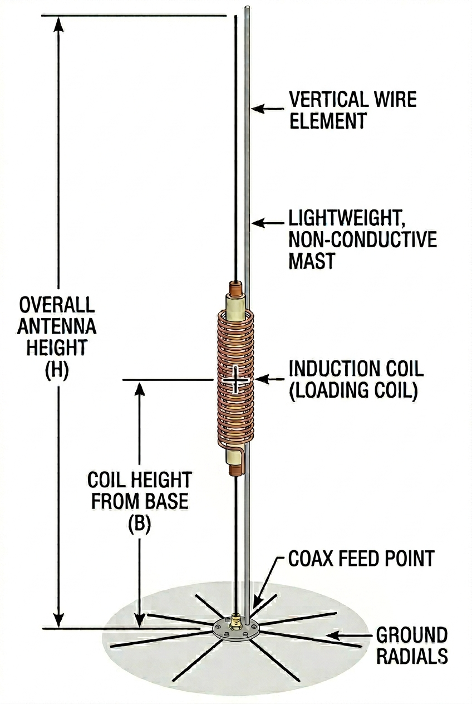

Inductance
µH
Pick which parameter to solve for with the radio button on its row. The other three fields stay editable; the solved value updates as you type.
Hall (1974) loading-coil formula · HF, ground-plane vertical

Pick which parameter to solve for with the radio button on its row. The other three fields stay editable; the solved value updates as you type.
Estimated assuming a fixed feedpoint resistance — the reactance comes from the Hall lumped model and is exact at f₀; the resistive part is a stand-in for radiation resistance plus ground/coil losses, so treat the bandwidth number as an order-of-magnitude guide rather than a measurement. Typical short-vertical feedpoint R with a moderate radial field falls in the 25 – 50 Ω range.